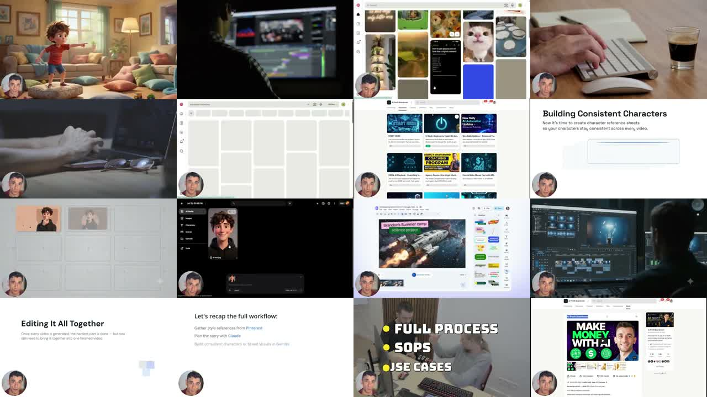
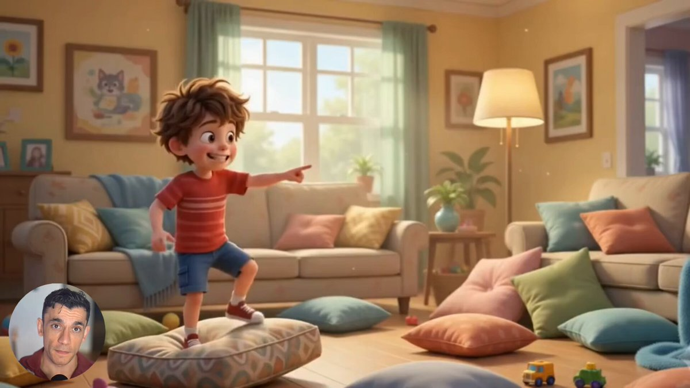

X｜Julian Goldie：Google Vids + Claude + Gemini 製作連貫卡通影片工作流

Julian Goldie SEO（@JulianGoldieSEO）在 X 發布一支約 487 秒影片，主張 Google 帳號裡有一個很多人沒打開過的免費 AI 工具，可以做 full connected cartoon videos，並維持 same characters、no installs、no production team。貼文 CTA 是「Want the SOP? DM me」，因此本文把它整理為社群工作流案例，而不是官方教學。
這篇是既有〈Google Vids + Gemini，把一句話變成商務影片草稿〉的 follow-up。前一篇偏商務影片與 prompt 改風格；本篇偏卡通角色一致性、分鏡拆解與 3 秒 beat prompting。
貼文提供的流程
貼文把流程拆成五步：
- Pinterest style board：先挑一種視覺風格，存成參考板。
- Claude story outline：先 scene by scene 寫故事大綱，不要直接開始生成。
- Gemini character sheet：做 multi-angle、可重用的角色參考圖。
- Timeline prompting：把場景拆成 3 秒 beats。
- Google Vids：在同一處生成、延伸與編輯。
這個流程的價值不在「某個按鈕」，而是在把影像生成常見的混亂拆成：風格 → 故事 → 角色 → 片段節奏 → 編輯整合。
影片畫面保存

縮圖是一個皮克斯感兒童卡通客廳場景：男孩站在抱枕上指向右側，畫面溫暖、柔光、家居空間明亮；左下角有 Julian 的講者頭像。縮圖本身沒有明顯文字標題。
Contact sheet 可見：
- 卡通男孩與室內客廳場景。
- 剪輯/timeline 介面與滑鼠操作畫面。
- Pinterest 風格板與素材收集畫面，可見貓、室內、配色等參考。
- 「Building Consistent Characters」教學頁，副標大意為需建立 character reference sheet，讓角色在每支影片中一致。
- Gemini / Google Vids 類介面中出現角色圖、空白分鏡格、prompt 或 chat panel。
- 「Brandon’s Summer Camp」範例影片畫面、右側編輯面板與多色選項。
- 「Editing It All Together」「Let’s recap the full workflow」畫面。
- 結尾出現「FULL PROCESS / SOPS / USE CASES」與 Julian 商業導流頁。
Contact sheet 只能保存抽樣畫面，不能逐秒驗證完整教程每一步。
官方來源查核
Google Vids 官方產品頁將 Vids 定位為由 Google AI 支援的線上影片製作與編輯工具，並在頁面中提到可使用 Veo 生成素材。
Google 官方 Blog〈Google Vids expands access to AI tools at no cost〉明確寫道：Google 正在把 Google Vids 中「select number of powerful Gemini features」從付費使用者擴大到 anyone who has a Gmail account。文中列出的例子包括 AI-generated voiceovers、transcript trimming、AI image editing 等。這可支持貼文「Google 帳號裡有免費入口」的方向，但注意是 select features，不是所有 Vids / Omni / Veo 能力全免費。
Google Workspace Blog〈Gemini Omni Flash now available in Google Vids〉描述 Gemini Omni Flash in Google Vids，可用 text prompts 編輯影片，並建立 realistic personal AI avatars。Workspace Updates 也有「Generate higher quality AI video clips and edit any video with Gemini Omni in Vids」公告，確認 Vids 的影片生成與編輯能力正在與 Gemini Omni 整合。
Gemini Omni 官方頁則描述：可 blend text, images and video，把想法變成動態內容；可用 photos、reference styles 與 clips 製作 multimodal media，並用 AI edit videos、remix gallery 或使用 template。
需要保留的限制
- 「free AI tool」要限定為 Google 已開放的 select Gemini features；進階 Omni、Veo、avatar、長影片輸出、企業功能可能仍受 Google AI Pro/Ultra、Workspace 方案、地區、語言與 rollout 限制。
- 「same characters」不是官方保證一鍵穩定；角色一致性通常需要 reference sheet、多角度圖、固定 prompt、短片段生成、人工挑選與後製銜接。
- Pinterest style board 只能作為視覺靈感，不能直接挪用受版權保護的角色/IP/插畫風格做商用仿作。
- Claude outline 與 Gemini character sheet 都可能產生不一致、偏離 prompt 或含有不可商用元素；需人工審稿。
- 兒童卡通、教育與品牌影片若大量自動化，很容易滑向低品質 AI slop；需建立劇本、鏡頭、聲音、字幕、授權與安全審核 checklist。
可轉成課程 SOP
- 建立風格板：只收集調色、構圖、材質與鏡頭語言，不複製受保護角色。
- 寫故事大綱：先定主角、目標、場景、衝突、結尾。
- 建角色 sheet：正面、側面、半身、表情、服裝、色彩與負面限制。
- 拆 3 秒 beats：每個 beat 只控制一個動作或一個鏡頭變化。
- 在 Vids/Gemini 中生成片段：逐段確認角色、場景、鏡頭與動作。
- 後製與審稿：字幕、音樂、旁白、商標、授權、事實與 CTA。
這則適合放在「AI 影片工作流：從 prompt 到可控分鏡」單元，提醒學生：真正有價值的是前期規劃與一致性控制，不是把工具名字串起來。